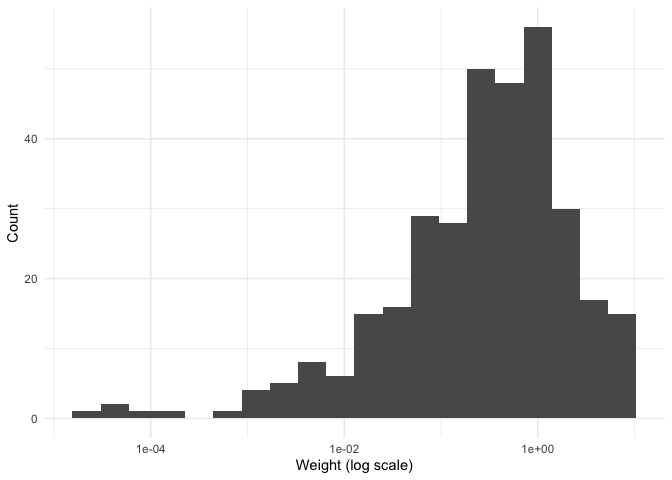
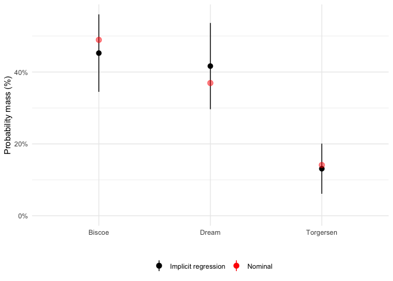
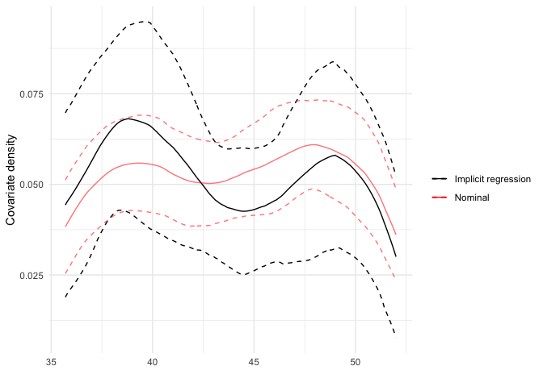

The goal of regweight is to make it easy to diagnose a model using Aronow and Samii (2015) regression weights.
In short, these weights show which observations are most influential for determining the observed value of a coefficient in a linear regression. If the linear regression is aiming to estimate causal effects, this implies that the OLS estimand may differ from the average treatment effect. These linear regression weights provide, in some sense, the most precise estimate available given a conditioning set (and a linear model). These weights are in expectation the conditional variance of the variable of interest (given the other covariates in the model).
For more details, see vignette("example-usage").
Installation
You can install regweight like so:
# From CRAN:
install.packages("regweight")
# Or the development version from GitHub:
# install.packages("devtools")
devtools::install_github("ddimmery/regweight")Example
This is a basic example which shows you how to analyze the implicit regression weights in a simple problem:
library(regweight)
library(estimatr)
data(penguins, package = "palmerpenguins")
model <- lm_robust(body_mass_g ~ ., penguins)
summary(model)
#>
#> Call:
#> lm_robust(formula = body_mass_g ~ ., data = penguins)
#>
#> Standard error type: HC2
#>
#> Coefficients:
#> Estimate Std. Error t value Pr(>|t|) CI Lower CI Upper DF
#> (Intercept) 84087.94 41946.611 2.0046 4.584e-02 1564.884 166611.005 323
#> speciesChinstrap -282.54 79.288 -3.5635 4.212e-04 -438.525 -126.554 323
#> speciesGentoo 890.96 132.512 6.7236 8.048e-11 630.263 1151.653 323
#> islandDream -21.18 56.015 -0.3781 7.056e-01 -131.380 89.019 323
#> islandTorgersen -58.78 63.182 -0.9303 3.529e-01 -183.078 65.524 323
#> bill_length_mm 18.96 6.214 3.0516 2.465e-03 6.738 31.190 323
#> bill_depth_mm 60.80 18.841 3.2270 1.379e-03 23.732 97.863 323
#> flipper_length_mm 18.50 2.878 6.4283 4.632e-10 12.841 24.167 323
#> sexmale 378.98 45.265 8.3724 1.737e-15 289.926 468.028 323
#> year -42.78 20.953 -2.0420 4.197e-02 -84.006 -1.563 323
#>
#> Multiple R-squared: 0.8768 , Adjusted R-squared: 0.8734
#> F-statistic: 298.1 on 9 and 323 DF, p-value: < 2.2e-16Let’s say that we want to explore the effect of flipper_length_mm on body_mass_g. Which units have high implicit weight in estimating this effect?
It’s very easy to use regweight to answer this question:
rw_model <- calculate_weights(model, "flipper_length_mm")
hist(rw_model)
#> Warning: Removed 11 rows containing non-finite values (stat_bin).
We can see how the distribution of weights over islands varies:
plot(rw_model, penguins$island)
We can similarly see the implicit distribution of bill_length_mm in the nominal (unweighted) and implicit (regression weighted) sample:
plot(rw_model, penguins$bill_length_mm)
Or get a table of summary statistics:
| Discrete variables | |||||
| Continuous variables | |||||